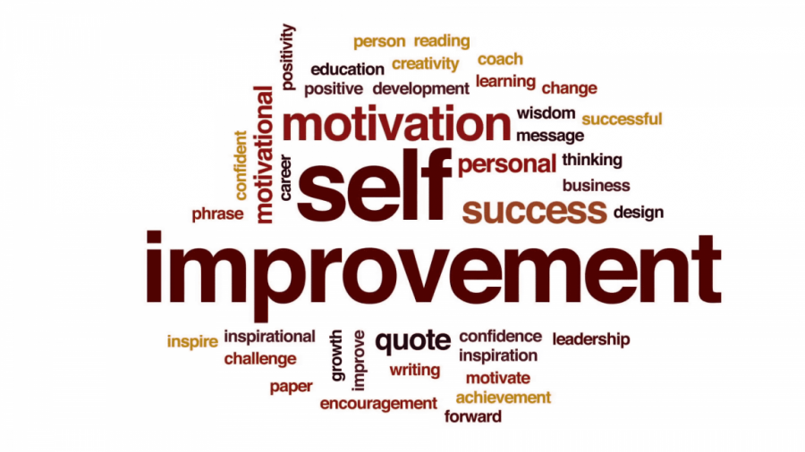

Self-Improvement
Discover practical tips and strategies for personal growth, self-confidence, and enhancing various aspects of your life.

Self-improvement is a journey of personal growth and development. It involves taking intentional steps to enhance various aspects of your life and become the best version of yourself. Here are some key areas you can focus on:
- Health and Well-being: Prioritize your physical and mental well-being through regular exercise, proper nutrition, and self-care practices.
- Personal Growth: Continuously learn and expand your knowledge and skills. Set goals, seek new experiences, and embrace challenges.
- Self-Confidence: Build a strong sense of self-confidence by recognizing your strengths, challenging self-limiting beliefs, and practicing self-compassion.
- Productivity and Time Management: Develop effective strategies to manage your time, set priorities, and increase your productivity.
- Relationships: Cultivate healthy and meaningful relationships. Practice active listening, empathy, and effective communication.
Remember, self-improvement is a lifelong journey. Embrace the process, be patient with yourself, and celebrate your progress along the way.